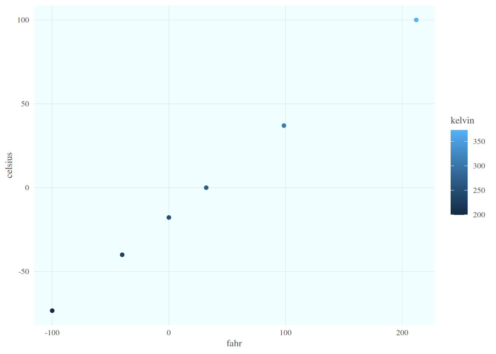
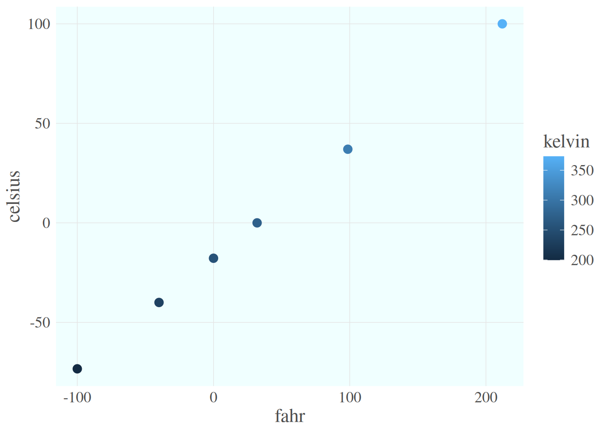

airtemps <- c(212, 30.3, 78, 32)
celsius1 <- (airtemps[1] - 32) * 5/9
celsius2 <- (airtemps[2] - 32) * 5/9
celsius3 <- (airtemps[3] - 32) * 5/9Learning Objectives
- Explain the importance of using and developing functions
- Create custom functions using R code
- Document functions to improve understanding and code communication
10.1 R Functions
Many people write R code as a single, continuous stream of commands, often drawn from the R Console itself and simply pasted into a script. While any script brings benefits over non-scripted solutions, there are advantages to breaking code into small, reusable modules. This is the role of a function in R. In this lesson, we will review the advantages of coding with functions, practice by creating some functions and show how to call them, and then do some exercises to build other simple functions.
10.1.1 Why Functions?
DRY: Don’t Repeat Yourself
“You should consider writing a function whenever you’ve copied and pasted a block of code more than twice (i.e. you now have three copies of the same code).”
Chapter 19 Functions in R for Data Science (Grolemund & Wickham)
There are many advantages to writing small functions that only complete one logical task and do it well:
- You can make the code easier to understand by giving an informative name to your function
- When you need to update your code, you only need to update in one place
- You can take advantage of iteration techniques such as the
purrr::mapfunctions
10.1.2 Exercise: Temperature Conversion
Imagine you have a bunch of data measured in Fahrenheit and you want to convert that for analytical purposes to Celsius. You might have an R script that does this for you.
Note the duplicated code, where the same formula is repeated three times. This code would be both more compact and more reliable if we didn’t repeat ourselves.
Create a Function that Converts Fahrenheit to Celsius
Functions in R are a mechanism to process some input and return a value. Similarly to other variables, functions can be assigned to a variable so that they can be used throughout code by reference. To create a function in R, you use the function function (so meta!) and assign its result to a variable. Let’s create a function that calculates Celsius temperature outputs from Fahrenheit temperature inputs.
convert_f_to_c <- function(fahr) {
celsius <- (fahr - 32) * 5/9
return(celsius)
}By running this code, we have created a function and stored it in R’s global environment. The fahr argument to the function function indicates that the function we are creating takes a single parameter (the temperature in Fahrenheit), and the return statement indicates that the function should return the value in the celsius variable that was calculated inside the function. Let’s use it, and check if we got the same value as before:
celsius1a <- convert_f_to_c(fahr = airtemps[1])
celsius1a[1] 100celsius1 == celsius1a[1] TRUEExcellent. So now we have a conversion function we can use. Note that, because most operations in R can work on vectors as easily as single values, we can also pass the original vector of airtemps, and calculate all of the results at once:
celsius <- convert_f_to_c(fahr = airtemps)
celsius[1] 100.0000000 -0.9444444 25.5555556 0.0000000This takes a vector of temperatures in Fahrenheit, and returns a vector of temperatures in Celsius. Note also that we explicitly named the argument inside the function call (convert_f_to_c(fahr = airtemps)), but in this simple case, R can figure it out if we didn’t explicitly tell it the argument name (convert_f_to_c(airtemps)). More on this later!
Your Turn: Create a Function that Converts Celsius to Fahrenheit
Exercise
Create a function named convert_c_to_f that does the reverse, it takes temperature data in Celsius as input, and returns the data converted to Fahrenheit.
Create the function convert_c_to_f in a new code chunk or even a separate R Script file.
Then use that formula to convert the celsius vector back into a vector of Fahrenheit values, and compare it to the original airtemps vector to ensure that your answers are correct.
Hint: the formula for Celsius to Fahrenheit conversions is celsius * 9/5 + 32.
Did you encounter any issues with rounding or precision?
10.1.3 Exercise: Minimizing Work with Functions
Functions can of course be as simple or complex as needed. They can be be very effective in repeatedly performing calculations, or for bundling a group of commands that are used on many different input data sources. For example, we might create a simple function that takes Fahrenheit temperatures as input, and calculates both Celsius and Kelvin temperatures. All three values are then returned in a list, making it very easy to create a comparison table among the three scales.
convert_temps <- function(fahr) {
celsius <- (fahr - 32) * 5/9
kelvin <- celsius + 273.15
return(list(fahr = fahr, celsius = celsius, kelvin = kelvin))
}
t_vec <- c(-100, -40, 0, 32, 98.6, 212)
temps_list <- convert_temps(fahr = t_vec)
temps_df <- data.frame(convert_temps(fahr = t_vec))But what if we wanted to make the function more flexible - instead of taking only Fahrenheit temperatures as input, what if we wanted to allow the user to optionally provide Celsius? Let’s add an additional argument so the user can specify the input units. And let’s return the result already formatted as a data frame.
convert_temps2 <- function(temp, unit = 'F') {
### Error checking:
unit <- toupper(unit) ### try to anticipate common mistakes!
if(!unit %in% c('F', 'C')) stop('The units must be either F or C!')
if(unit == 'F') {
fahr <- temp
celsius <- (fahr - 32) * 5/9
} else {
celsius <- temp
fahr <- celsius * 9 / 5 + 32
}
kelvin <- celsius + 273.15
out_df <- data.frame(fahr, celsius, kelvin)
return(out_df)
}
c_temps_df <- convert_temps2(temp = t_vec, unit = 'C')
f_temps_df <- convert_temps2(t_vec, 'F')
identical(f_temps_df, temps_df)[1] TRUEBy providing a default for the unit argument (unit = 'F'), the user can opt to skip that argument and R will use the default value. Because temp does not have a default, the user cannot skip that one! And note also that R interprets the arguments in order, so we can even skip naming them, though when calling novel or complex functions it is helpful to explicitly name the arguments.
10.1.4 Functions in the tidyverse
For those of us who frequently work with the tidyverse package and all its amazing functionality, understanding how those tidyverse functions are designed can help you write your own tidyverse style functions! There are two common use cases:
- A function that can be used to calculate inside a
mutate()orsummarize() - A function that can be used seamlessly in a piped
tidyverse-style workflow
10.1.4.1 Functions for mutate or summarize
This kind of function should take a vector (or multiple vectors) and return a single vector. Functions that return a vector the same length as the input would be useful for mutate(); functions that return a vector of length 1 (e.g., mean() or sd()) would be useful for summarize(). We’ve already created two functions like that!
data.frame(f = t_vec) %>%
mutate(c = convert_f_to_c(fahr = f),
f2 = convert_c_to_f(celsius = c)) f c f2
1 -100.0 -73.33333 -100.0
2 -40.0 -40.00000 -40.0
3 0.0 -17.77778 0.0
4 32.0 0.00000 32.0
5 98.6 37.00000 98.6
6 212.0 100.00000 212.0Why wouldn’t our convert_temps() function work here?
10.1.4.2 Functions for piped workflows
A common workflow in the tidyverse is to use the pipe operator %>% (or the newer built-in |>) to pass a data frame into a function like select(), filter(), or mutate(), and then pass the results from that into another function, and so on:
f_temps_df %>%
select(fahr, celsius) %>%
mutate(rankine = fahr + 459.67) fahr celsius rankine
1 -100.0 -73.33333 359.67
2 -40.0 -40.00000 419.67
3 0.0 -17.77778 459.67
4 32.0 0.00000 491.67
5 98.6 37.00000 558.27
6 212.0 100.00000 671.67For this to work:
- Every
dplyrandtidyrfunction takes a data frame (or variant such as a tibble) as its first argument. - Every
dplyrandtidyrfunction returns a data frame (or variant).
The pipe operator %>% says, take the preceding object (a data frame, such as one returned by a dplyr function) and pass it to the next function (such as another dplyr function) as the first argument!
10.1.5 Exercise: make a tidyverse style function
Let’s make a function that can take a dataframe and calculate a new column that tells whether a temperature is hot or cold, based on some threshold.
calc_hotcold <- function(df, thresh = 70) {
### error check:
if(!'fahr' %in% names(df)) stop('The data frame must have a column called `fahr`!')
out_df <- df %>%
mutate(hotcold = ifelse(fahr > thresh, 'hot', 'cold'))
return(out_df)
}
f_temps_df %>%
select(fahr, celsius) %>%
calc_hotcold(thresh = 80) %>%
arrange(desc(fahr)) fahr celsius hotcold
1 212.0 100.00000 hot
2 98.6 37.00000 hot
3 32.0 0.00000 cold
4 0.0 -17.77778 cold
5 -40.0 -40.00000 cold
6 -100.0 -73.33333 cold10.1.6 Functions and ggplot()
Once we have a dataset like that, we might want to plot it. One thing that we do repeatedly is set a consistent set of display elements for creating graphs and plots. By using a function to create a custom ggplot theme, we can enable to keep key parts of the formatting flexible. For example, in the custom_theme function, we provide a base_size argument that defaults to using a font size of 9 points. Because it has a default set, it can safely be omitted. But if it is provided, then that value is used to set the base font size for the plot.
custom_theme <- function(base_size = 9) {
### NOTE: functions used *inside* a function need to be available,
### e.g., attached with library() or called using namespace (package::function)
ggplot2::theme(
text = element_text(family = 'serif',
color = 'gray30',
size = base_size),
plot.title = element_text(size = rel(1.25),
hjust = 0.5,
face = 'bold'),
panel.background = element_rect(fill = 'azure'),
panel.border = element_blank(),
panel.grid.minor = element_blank(),
panel.grid.major = element_line(colour = 'grey90',
linewidth = 0.25),
legend.position = 'right',
legend.key = element_rect(colour = NA,
fill = NA),
axis.ticks = element_blank(),
axis.line = element_blank()
)
}
library(ggplot2)
ggplot(temps_df, mapping = aes(x = fahr, y = celsius, color = kelvin)) +
geom_point() +
custom_theme(10)
In this case, we set the font size to 10, and plotted the air temperatures. The custom_theme function can be used anywhere that one needs to consistently format a plot.
But we can go further. One can wrap the entire call to ggplot in a function, enabling one to create many plots of the same type with a consistent structure. For example, we can create a scatterplot function that takes a data frame as input, along with a point_size for the points on the plot, and a font_size for the text.
scatterplot <- function(df, point_size = 2, font_size = 9) {
ggplot(df, mapping = aes(x = fahr, y = celsius, color = kelvin)) +
geom_point(size = point_size) +
custom_theme(font_size)
}Calling that lets us, in a single line of code, create a highly customized plot but maintain flexibility via the arguments passed in to the function. Let’s set the point size to 3 and font to 16 to make the plot more legible.
scatterplot(temps_df, point_size = 3, font_size = 16)
Once these functions are set up, all of the plots built with them can be reformatted by changing the settings in just the functions, whether they were used to create 1, 10, or 100 plots.
10.1.7 Summary
- Use functions to make code more legible, reuse code, and reduce errors
- Build functions with
function() - Design functions to work with
tidyverseflow
10.2 R Packages
Most R users are familiar with loading and utilizing packages in their work. And they know how rich CRAN is in providing for many conceivable needs. Most people have never created a package for their own work, and most think the process is too complicated. Really it’s pretty straighforward and super useful in your personal work. Creating packages serves two main use cases:
- Mechanism to redistribute reusable code (even if just for yourself)
- Mechanism to reproducibly document analysis and models and their results
Even if you don’t plan on writing a package with such broad appeal such as, say, ggplot2 or dplyr, you still might consider creating a package to contain:
- Useful utility functions you write (i.e. a Personal Package). Having a place to put these functions makes it much easier to find and use them later.
- A set of shared routines for your lab or research group, making it easier to remain consistent within your team and also to save time.
- The analysis accompanying a thesis or manuscript, making it all that much easier for others to reproduce your results.
10.2.1 Create a Basic Package
To create a package we’re going to use the following packages:
devtools: Provides R functions that make package development easier by expediting common development tasks.usethis: Commonly referred to as a “workflow package” and provides functions that automate common tasks in project setup and development for both R packages and non-package projects.roxygen2: Provides a structure for describing your functions in the scripts you’re creating them in. It will additionally process the source code and the documentation within it to automatically create the necessary files for the documentation to appear in your R Package.
Thanks to the great usethis package, it only takes one function call to create the skeleton of an R package using create_package(). Which eliminates pretty much all reasons for procrastination. To create a package called mytools, all you do is:
usethis::create_package("~/mytools")✔ Creating '/home/dolinh/mytools/'
✔ Setting active project to '/home/dolinh/mytools'
✔ Creating 'R/'
✔ Writing 'DESCRIPTION'
Package: mytools
Title: What the Package Does (One Line, Title Case)
Version: 0.0.0.9000
Authors@R (parsed):
* First Last <first.last@example.com> [aut, cre] (YOUR-ORCID-ID)
Description: What the package does (one paragraph).
License: `use_mit_license()`, `use_gpl3_license()` or friends to
pick a license
Encoding: UTF-8
Roxygen: list(markdown = TRUE)
RoxygenNote: 7.2.3
✔ Writing 'NAMESPACE'
✔ Writing 'mytools.Rproj'
✔ Adding '^mytools\\.Rproj$' to '.Rbuildignore'
✔ Adding '.Rproj.user' to '.gitignore'
✔ Adding '^\\.Rproj\\.user$' to '.Rbuildignore'
✔ Opening '/home/dolinh/mytools/' in new RStudio session
✔ Setting active project to '<no active project>'10.2.2 Add a License
Information about choosing a LICENSE is provided in the R Package (2e) book Chapter 12: Licensing.
The DESCRIPTION file expects the license to be chose from a predefined list, but you can use its various utility methods for setting a specific license file, such as the MIT license or the Apache 2 license:
usethis::use_apache_license()✔ Setting License field in DESCRIPTION to 'Apache License (>= 2.0)'
✔ Writing 'LICENSE.md'
✔ Adding '^LICENSE\\.md$' to '.Rbuildignore'Once your license has been chosen, and you’ve edited your DESCRIPTION file with your contact information, a title, and a description, it will look like this:
10.2.3 Add Code
The skeleton package created contains a directory R which should contain your source files. Add your functions and classes in files to this directory, attempting to choose names that don’t conflict with existing packages. For example, you might add a file custom_theme that contains a function custom_theme() that you might want to reuse. The usethis::use_r() function will help set up you files in the right places. For example, running:
usethis::use_r("custom_theme")✔ Setting active project to '/home/dolinh/mytools'
• Modify 'R/custom_theme.R'
• Call `use_test()` to create a matching test filecreates the file R/custom_theme and stores it in the R directory, which you can then modify as needed:
custom_theme <- function(base_size = 9) {
ggplot2::theme(
axis.ticks = ggplot2::element_blank(),
text = ggplot2::element_text(family = 'Helvetica',
color = 'gray30',
size = base_size),
plot.title = ggplot2::element_text(size = ggplot2::rel(1.25),
hjust = 0.5,
face = 'bold'),
panel.background = ggplot2::element_blank(),
legend.position = 'right',
panel.border = ggplot2::element_blank(),
panel.grid.minor = ggplot2::element_blank(),
panel.grid.major = ggplot2::element_line(colour = 'grey90',
linewidth = .25),
legend.key = ggplot2::element_rect(colour = NA,
fill = NA),
axis.line = ggplot2::element_blank()
)
}10.2.4 Add Dependencies
If your R code depends on functions from another package, you must declare it. In the Imports section in the DESCRIPTION file, list all the packages your functions depend upon.
In our custom_theme() function, we depend on the ggplot2 package, and so we need to list it as a dependency.
Once again, usethis provides a handy helper method:
usethis::use_package("ggplot2")✔ Adding 'ggplot2' to Imports field in DESCRIPTION
• Refer to functions with `ggplot2::fun()`Take a look at the DESCRIPTION file again, and you’ll see the Imports section has been added, with ggplot2 underneath.
10.2.5 Add Documentation
Documentation is crucial to add to each of your functions. In the Functions Lesson, we did this using the roxygen2 package and that same package and approach can be used for packages.
The roxygen2 approach allows us to add comments in the source code, where are then converted into Help pages that we can access by typing ?function_name in the Console.
Let’s add documentation for the custom_theme() function.
#' My custom ggplot theme
#'
#' @param base_size Numeric value of font size of all text elements in plot
#'
#' @return A theme used for ggplot point or line plots
#' @export
#'
#' @examples
#' library(ggplot2)
#'
#' ggplot(data = mtcars, aes(x = mpg, y = disp)) +
#' geom_point() +
#' custom_theme(base_size = 30)
custom_theme <- function(base_size = 9) {
ggplot2::theme(
axis.ticks = ggplot2::element_blank(),
text = ggplot2::element_text(family = 'Helvetica',
color = 'gray30',
size = base_size),
plot.title = ggplot2::element_text(size = ggplot2::rel(1.25),
hjust = 0.5,
face = 'bold'),
panel.background = ggplot2::element_blank(),
legend.position = 'right',
panel.border = ggplot2::element_blank(),
panel.grid.minor = ggplot2::element_blank(),
panel.grid.major = ggplot2::element_line(colour = 'grey90',
linewidth = .25),
legend.key = ggplot2::element_rect(colour = NA,
fill = NA),
axis.line = ggplot2::element_blank()
)
}Once your files are documented, you can then process the documentation using devtools::document() to generate the appropriate .Rd files that your package needs. The .Rd files will appear in the man/ directory, which is automatically created by devtools::document().
devtools::document()ℹ Updating mytools documentation
ℹ Loading mytools
Writing custom_theme.RdWe now have a package that we can check() and install() and release(). These functions come from the devtools package, but first let’s do some testing.
10.2.6 Testing
You can test your code using the testthat package’s testing framework. The ussethis::use_testthat() function will set up your package for testing, and then you can use the use_test() function to setup individual test files. For example, in the Functions Lesson we created some tests for our fahr_to_celsius functions but ran them line by line in the console.
First, lets add that function to our package. Run the use_r function in the console:
usethis::use_r("fahr_to_celsius")Then copy the function and documentation into the R script that opens and save the file.
#' Convert temperature values from Fahrenheit to Celsius
#'
#' @param fahr Numeric or numeric vector in degrees Fahrenheit
#'
#' @return Numeric or numeric vector in degrees Celsius
#' @export
#'
#' @examples
#' fahr_to_celsius(32)
#' fahr_to_celsius(c(32, 212, 72))
fahr_to_celsius <- function(fahr) {
celsius <- (fahr-32)*5/9
return(celsius)
}Now, set up your package for testing:
usethis::use_testthat()✔ Setting active project to '/home/dolinh/mytools'
✔ Adding 'testthat' to Suggests field in DESCRIPTION
✔ Setting Config/testthat/edition field in DESCRIPTION to '3'
✔ Creating 'tests/testthat/'
✔ Writing 'tests/testthat.R'
• Call `use_test()` to initialize a basic test file and open it for editing.Then write a test for fahr_to_celsius:
usethis::use_test("fahr_to_celsius")✔ Writing 'tests/testthat/test-fahr_to_celsius.R'
• Modify 'tests/testthat/test-fahr_to_celsius.R'You can now add tests to the test-fahr_to_celsius.R, and you can run all of the tests using devtools::test(). For example, if you add a test to the test-fahr_to_celsius.R file:
test_that("fahr_to_celsius works", {
expect_equal(fahr_to_celsius(32), 0)
expect_equal(fahr_to_celsius(212), 100)
})Then you can run the tests to be sure all of your functions are working using devtools::test():
devtools::test()ℹ Testing mytools
✔ | F W S OK | Context
✔ | 2 | fahr_to_celsius [0.2s]
══ Results ════════════════════════════════════════════════════════════════════════════════════════════════════════════════════════
Duration: 0.4 s
[ FAIL 0 | WARN 0 | SKIP 0 | PASS 2 ]Yay, all tests passed!
10.2.7 Checking and Installing
Now that you’ve completed testing your package, you can check it for consistency and completeness using devtools::check().
devtools::check()══ Documenting ════════════════════════════════════════════════════════════════════════════════════════════════════════════════════
ℹ Updating mytools documentation
ℹ Loading mytools
══ Building ═══════════════════════════════════════════════════════════════════════════════════════════════════════════════════════
Setting env vars:
• CFLAGS : -Wall -pedantic -fdiagnostics-color=always
• CXXFLAGS : -Wall -pedantic -fdiagnostics-color=always
• CXX11FLAGS: -Wall -pedantic -fdiagnostics-color=always
• CXX14FLAGS: -Wall -pedantic -fdiagnostics-color=always
• CXX17FLAGS: -Wall -pedantic -fdiagnostics-color=always
• CXX20FLAGS: -Wall -pedantic -fdiagnostics-color=always
── R CMD build ────────────────────────────────────────────────────────────────────────────────────────────────────────────────────
✔ checking for file ‘/home/dolinh/mytools/DESCRIPTION’ (610ms)
─ preparing ‘mytools’:
✔ checking DESCRIPTION meta-information (338ms)
─ checking for LF line-endings in source and make files and shell scripts
─ checking for empty or unneeded directories
─ building ‘mytools_0.0.0.9000.tar.gz’
══ Checking ═══════════════════════════════════════════════════════════════════════════════════════════════════════════════════════
Setting env vars:
• _R_CHECK_CRAN_INCOMING_REMOTE_ : FALSE
• _R_CHECK_CRAN_INCOMING_ : FALSE
• _R_CHECK_FORCE_SUGGESTS_ : FALSE
• _R_CHECK_PACKAGES_USED_IGNORE_UNUSED_IMPORTS_: FALSE
• NOT_CRAN : true
── R CMD check ────────────────────────────────────────────────────────────────────────────────────────────────────────────────────
─ using log directory ‘/tmp/Rtmp1UgqFD/file6d79323df6fae/mytools.Rcheck’ (649ms)
─ using R version 4.2.2 (2022-10-31)
─ using platform: x86_64-pc-linux-gnu (64-bit)
─ using session charset: UTF-8
─ using options ‘--no-manual --as-cran’
✔ checking for file ‘mytools/DESCRIPTION’
─ this is package ‘mytools’ version ‘0.0.0.9000’
─ package encoding: UTF-8
✔ checking package namespace information
✔ checking package dependencies (2.1s)
✔ checking if this is a source package
✔ checking if there is a namespace
✔ checking for executable files
✔ checking for hidden files and directories
✔ checking for portable file names
✔ checking for sufficient/correct file permissions
✔ checking serialization versions
✔ checking whether package ‘mytools’ can be installed (3.2s)
✔ checking installed package size
✔ checking package directory
✔ checking for future file timestamps (412ms)
✔ checking DESCRIPTION meta-information (584ms)
✔ checking top-level files ...
✔ checking for left-over files
✔ checking index information
✔ checking package subdirectories ...
✔ checking R files for non-ASCII characters ...
✔ checking R files for syntax errors ...
✔ checking whether the package can be loaded (481ms)
✔ checking whether the package can be loaded with stated dependencies ...
✔ checking whether the package can be unloaded cleanly ...
✔ checking whether the namespace can be loaded with stated dependencies ...
✔ checking whether the namespace can be unloaded cleanly (450ms)
✔ checking loading without being on the library search path (522ms)
✔ checking dependencies in R code (1.2s)
✔ checking S3 generic/method consistency (1s)
✔ checking replacement functions ...
✔ checking foreign function calls ...
✔ checking R code for possible problems (5.2s)
✔ checking Rd files (449ms)
✔ checking Rd metadata ...
✔ checking Rd line widths ...
✔ checking Rd cross-references ...
✔ checking for missing documentation entries ...
✔ checking for code/documentation mismatches (885ms)
✔ checking Rd \usage sections (1.3s)
✔ checking Rd contents ...
✔ checking for unstated dependencies in examples ...
✔ checking examples (2.7s)
✔ checking for unstated dependencies in ‘tests’ ...
─ checking tests (418ms)
✔ Running ‘testthat.R’ (1.4s)
✔ checking for non-standard things in the check directory
✔ checking for detritus in the temp directory
── R CMD check results ──────────────────────────────────────────────────────────────────────────────────── mytools 0.0.0.9000 ────
Duration: 27.3s
0 errors ✔ | 0 warnings ✔ | 0 notes ✔Then you can install it locally using devtools::install(), which needs to be run from the parent directory of your module
devtools::install()── R CMD build ────────────────────────────────────────────────────────────────────────────────────────────────────────────────────
✔ checking for file ‘/home/dolinh/mytools/DESCRIPTION’ (541ms)
─ preparing ‘mytools’:
✔ checking DESCRIPTION meta-information ...
─ checking for LF line-endings in source and make files and shell scripts
─ checking for empty or unneeded directories
─ building ‘mytools_0.0.0.9000.tar.gz’
Running /opt/R/4.2.2/lib/R/bin/R CMD INSTALL /tmp/Rtmp1UgqFD/mytools_0.0.0.9000.tar.gz --install-tests
* installing to library ‘/home/dolinh/R/x86_64-pc-linux-gnu-library/4.2’
* installing *source* package ‘mytools’ ...
** using staged installation
** R
** tests
** byte-compile and prepare package for lazy loading
** help
*** installing help indices
** building package indices
** testing if installed package can be loaded from temporary location
** testing if installed package can be loaded from final location
** testing if installed package keeps a record of temporary installation path
* DONE (mytools)After installing, your package is now available for use in your local environment, yay!
Check out the Build Tab
Remember when we ran usethis::create_package() and after we ran it we saw the Build Tab added to the Environment pane?
In the Build Tab, each of the buttons correspond with one of the devtools functions we ran, meaning:
- Test button is equivalent to running
devtools::test()in the Console - Check button is equivalent to running
devtools::check()in the Console - Install button is equivalent to running
devtools::install()in the Console
10.2.9 Exercise: Add More Functions
Add additional temperature conversion functions to the mytools package and:
- Add full documentation for each function
- Write tests to ensure the functions work properly
- Rebuild the package using
document(),check(), andinstall()
Don’t forget to update the version number before you install!
Version information is located in the DESCRIPTION file and when you first create a package the version is 0.0.0.9000.
This version number follows the format major.minor.patch.dev. The different parts of the version represent different things:
- Major: A significant change to the package that would be expected to break users code. This is updated very rarely when the package has been redesigned in some way.
- Minor: A minor version update means that new functionality has been added to the package. It might be new functions to improvements to existing functions that are compatible with most existing code.
- Patch: Patch updates are bug fixes. They solve existing issues but don’t do anything new.
- Dev: Dev versions are used during development and this part is missing from release versions. For example you might use a dev version when you give someone a beta version to test. A package with a dev version can be expected to change rapidly or have undiscovered issues.
After you’ve made some changes to a package, but before you install run the code:
usethis::use_version()Current version is 0.0.0.9000.
What should the new version be? (0 to exit)
1: major --> 1.0.0
2: minor --> 0.1.0
3: patch --> 0.0.1
4: dev --> 0.0.0.9001Since we’re adding new functions, we can consider this a minor change and can select option 2.
Selection: 2
✔ Setting Version field in DESCRIPTION to '0.1.0'Source: COMBINE’s R package workshop, Ch 9: Versioning
10.2.10 Additional Resources
- Hadley Wickham and Jenny Bryan’s awesome book: R Packages
- ROpenSci Blog Post: How to create your personal CRAN-like repository on R-universe
- Karl Broman’s: R package primer: a minimal tutorial on writing R packages
- Thomas Westlake’s Short Tutorial: Writing an R package from scratch (his post is an updated version of Hilary Parker’s blog post)